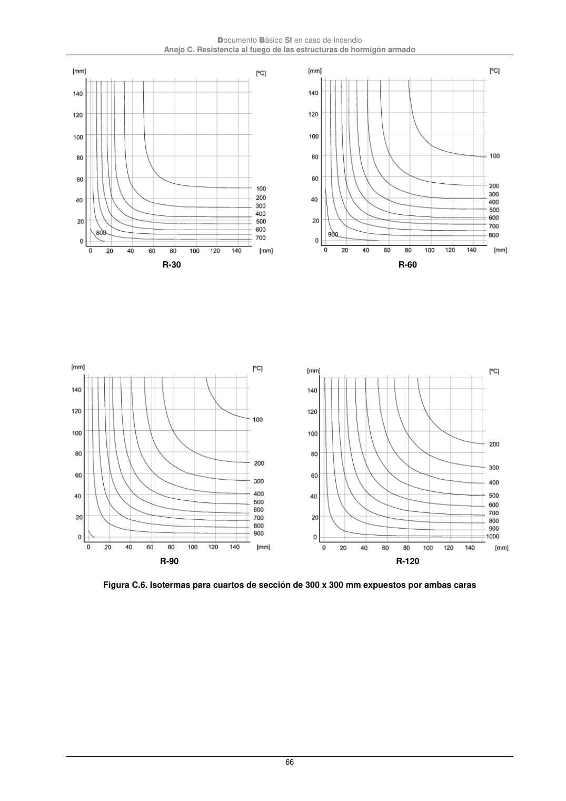
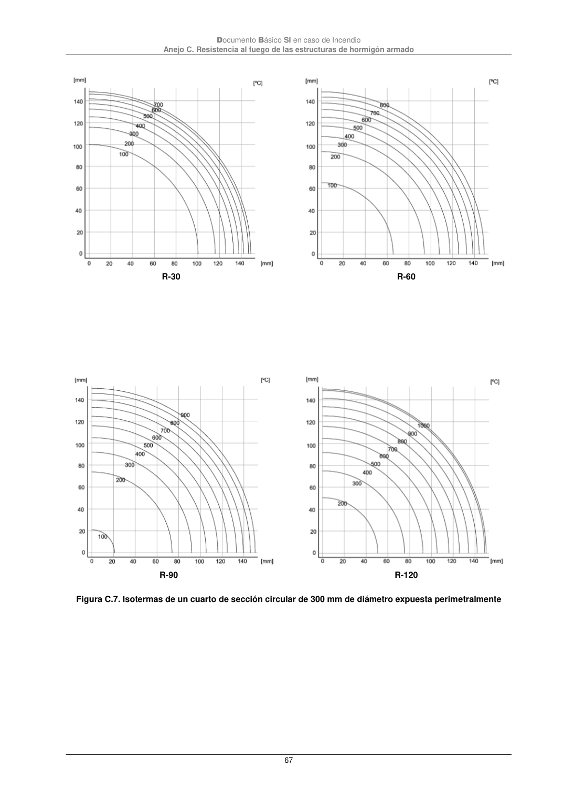
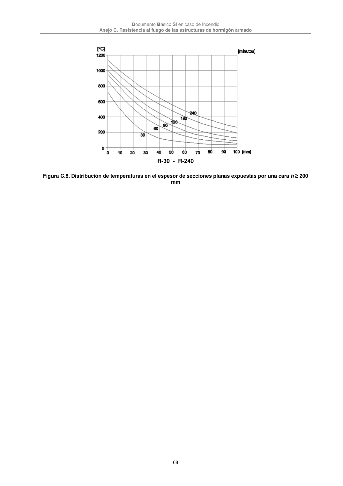

DB-SI Seguridad en caso de incendio · edición 2025-03-04 · capa oficial
Documento DB-SI-oficial · SHA-256 del PDF 0a2e78cd62471d9cc5cfe2efbc6aa39fdbad73c124aea7b039f9de96c141e105
Copia fiel del PDF fuente · Fuente oficial
Ficha de la disposición en la fuente oficial
Formatos: JSON del segmento · Markdown
R-30 R-60 R-60 R-90 R-120 R-120 Figura C.6. Isotermas para cuartos de sección de 300 x 300 mm expuestos por ambas caras Documento Básico SI en caso de Incendio Anejo C. Resistencia al fuego de las estructuras de hormigón armado 67 R-30 R-60 R-90 R-120 Figura C.7. Isotermas de un cuarto de sección circular de 300 mm de diámetro expuesta perimetralmente Documento Básico SI en caso de Incendio Anejo C. Resistencia al fuego de las estructuras de hormigón armado 68 R-30 - R-240 Figura C.8. Distribución de temperaturas en el espesor de secciones planas expuestas por una cara h ≥ 200 mm


